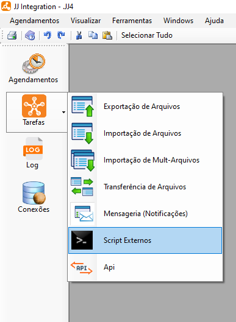
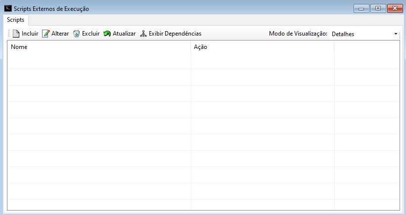
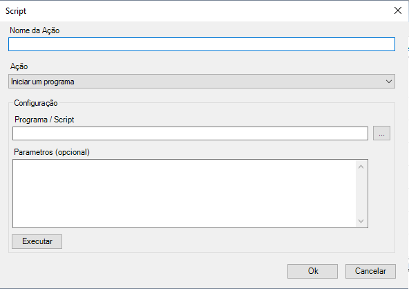
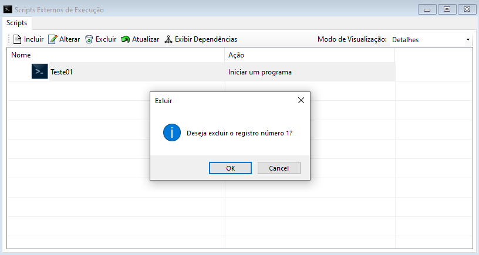
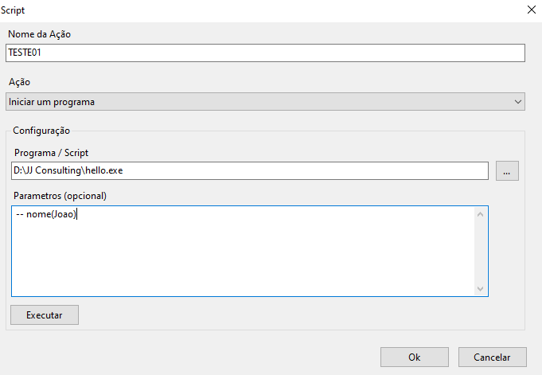
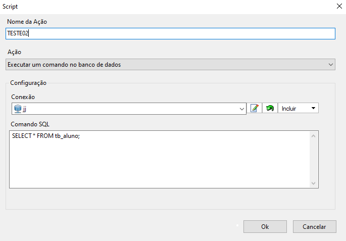
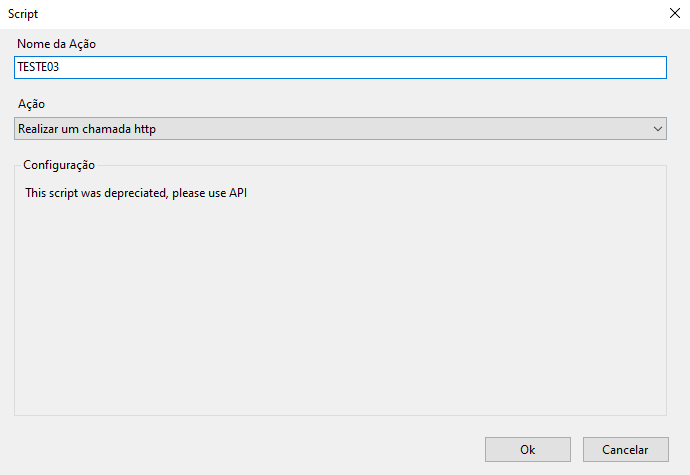

Scripts Externos
Scripts Externos é uma função onde pode-se incluir, alterar, excluir scripts cadastrados no sistema e atualizar a lista de scripts.
Esta seção pode ser acessada pelo menu lateral em Tarefas ou menu de utilidades > Ferramentas > Scripts Externos.
Scripts Externos refere-se a um trecho de código ou programa que é desenvolvido em uma linguagem de programação específica e é executado fora do contexto principal de um sistema. Geralmente, um script externo é escrito separadamente do sistema principal e tem como objetivo fornecer funcionalidades adicionais, realizar tarefas específicas ou integrar-se com outros sistemas ou componentes.

 Scripts Externos
Scripts Externos
- Ao selecionar esta opção o sistema irá exibir uma tela onde é possível incluir, alterar, excluir, atualizar scripts e exibir dependências.

- Selecione o botão Incluir
 para incluir um novo script. Ao selecionar o sistema irá exibir uma tela para cadastro, preencha os dados necessários e ao finalizar o preenchimento selecione o botão "Ok" para salvar o novo mapeamento.
para incluir um novo script. Ao selecionar o sistema irá exibir uma tela para cadastro, preencha os dados necessários e ao finalizar o preenchimento selecione o botão "Ok" para salvar o novo mapeamento.

- Para alterar um script selecione o script desejado e após selecione o botão Alterar
 . Ao selecionar o sistema irá exibir uma tela com detalhes do script, altere as informações necessárias, após selecione o botão "Executar" para verificar se o script está correto e em seguida selecione o botão "Ok" para salvar as alterações e finalizar.
. Ao selecionar o sistema irá exibir uma tela com detalhes do script, altere as informações necessárias, após selecione o botão "Executar" para verificar se o script está correto e em seguida selecione o botão "Ok" para salvar as alterações e finalizar.
- Para excluir um script selecione o arquivo desejado e após selecione o botão Excluir
 , após selecionar o sistema irá exibir uma mensagem de confirmação, selecione o botão "Ok" para confirmar e excluir.
, após selecionar o sistema irá exibir uma mensagem de confirmação, selecione o botão "Ok" para confirmar e excluir.

Para atualizar a lista de scripts externos selecione o botão Atualizar
 , após selecionar o sistema irá atualizar a lista sendo possível dar continuidade nas atividades normalmente. Também é possível Duplicar scripts externos já criado, visando simplificar o processo e produtividade.
, após selecionar o sistema irá atualizar a lista sendo possível dar continuidade nas atividades normalmente. Também é possível Duplicar scripts externos já criado, visando simplificar o processo e produtividade.Para exibir dependencias da tarefa selecionada, selecione o botão Exibir Dependências
 , após selecionar o sistema irá exibir a lista de dependências da tarefa caso exista alguma.
, após selecionar o sistema irá exibir a lista de dependências da tarefa caso exista alguma.

- O JJ Integration oferece quatro tipos de ações em Scripts Externos, cada um com suas próprias funcionalidades e características específicas. Esses recursos são Iniciar um Programa, Executar um Comando no Banco de Dados, Realizar uma chamada HTTP e Processar um Cubo MS OLAP. A seguir, apresentaremos uma descrição mais detalhada sobre cada um deles:
Iniciar um Programa
A ação de Iniciar um Programa em um script externo se refere ao processo de executar um programa ou aplicativo a partir do código do script. Quando um script externo é desenvolvido para iniciar um programa, ele pode conter comandos ou chamadas de função que iniciam a execução do programa desejado.
- Envolve a utilização de comandos, chamadas de função ou bibliotecas específicas para iniciar a execução de um programa externo a partir do código do script.

- Suponha que você tenha um script Python que precise iniciar um programa de saudações. O script pode incluir uma chamada de função ou um comando para iniciar o programa e passar o parâmetro do nome como argumento. Dessa forma, o programa de saudações pode receber o parâmetro e exibir uma mensagem personalizada.
Executar um Comando no Banco de Dados
A ação de Executar um Comando no Banco de Dados, você precisará de uma conexão com um banco de dados e escrever o comando SQL válido de acordo com a sintaxe do banco de dados específico. Você pode incluir cláusulas como SELECT, INSERT, UPDATE, DELETE ou outras, conforme necessário. Além disso, você pode usar parâmetros ou variáveis para tornar o comando SQL dinâmico e adaptável aos dados que está manipulando.

- Neste exemplo, o comando SQL inserido foi um SELECT na tb_aluno com a conexão com o banco jj.
Realizar uma chamada HTTP
A ação de Realizar uma chamada HTTP em um script externo se refere a enviar uma requisição a um servidor por meio do protocolo HTTP e receber uma resposta.
- Em um script externo, você pode realizar uma chamada HTTP para diversos propósitos, como consumir uma API, enviar ou receber dados, fazer solicitações GET, POST, PUT, DELETE, entre outras.

- "This script was depreciated, please use API" significa que o script em questão está obsoleto ou em desuso, e é recomendado utilizar uma API no lugar dele.
Processar um Cubo MS OLAP
Processar um cubo MS OLAP em um script externo se refere a executar o processamento de um cubo OLAP (Online Analytical Processing) do Microsoft SQL Server Analysis Services (SSAS) por meio de um script escrito em uma linguagem de programação externa.

- Ao realizar o processamento do cubo MS OLAP em um script externo, você pode utilizar bibliotecas, drivers ou APIs fornecidos pelo SSAS para se conectar ao servidor do Analysis Services e executar as operações de processamento necessárias.